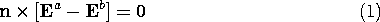
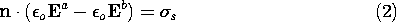
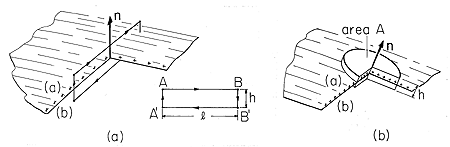
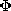
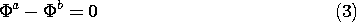
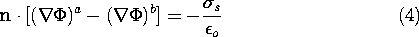

At the surfaces of metal conductors, charge densities accumulate that are only a few atomic distances thick. In describing their fields, the details of the distribution within this thin layer are often not of interest. Thus, the charge is represented by a surface charge density (1.3.11) and the surface supporting the charge treated as a surface of discontinuity.
In such cases, it is often convenient to divide a volume in which the field is to be determined into regions separated by the surfaces of discontinuity, and to use piece-wise continuous functions to represent the fields. Continuity conditions are then needed to connect field solutions in two regions separated by the discontinuity. These conditions are implied by the differential equations that apply throughout the region. They assure that the fields are consistent with the basic laws, even in passing through the discontinuity.
Each of the four Maxwell's equations implies a continuity condition. Because of the singular nature of the source distribution, these laws are used in integral form to relate the fields to either side of the surface of discontinuity. With the vector n defined as the unit normal to the surface of discontinuity and pointing from region (b) to region (a), the continuity conditions were summarized in Table 1.8.3.
In the EQS approximation, the laws of primary interest are Faraday's law without the magnetic induction and Gauss' law, the first two equations of Chap. 4. Thus, the corresponding EQS continuity conditions are

 Because the magnetic induction makes no contribution to Faraday's continuity condition in any case, these conditions are the same as for the general electrodynamic laws. As a reminder, the contour enclosing the integration surface over which Faraday's law was integrated (Sec. 1.6) to obtain (1) is shown in Fig. 5.3.1a. The integration volume used to obtain (2) from Gauss' law (Sec. 1.3) is similarly shown in Fig. 5.3.1b.
 Figure 5.3.1 (a) Differential contour intersecting surface supporting surface charge density. (b) Differential volume enclosing surface charge on surface having normal n. What are the continuity conditions on the electric potential? The potential  is continuous across a surface of discontinuity even if that surface carries a surface charge density. This will be the case when the E field is finite (a dipole layer containing an infinite field causes a jump of potential), because then the line integral of the electric field from one side of the surface to the other side is zero, the path-length being infinitely small.

To determine the jump condition representing Gauss' law through the surface of discontinuity, it was integrated (Sec. 1.3) over the volume shown intersecting the surface in Fig. 5.3.1b. The resulting continuity condition, (2), is written in terms of the potential by recognizing that in the EQS approximation, E = - .
 At a surface of discontinuity that carries a surface charge density, the normal derivative of the potential is discontinuous.
The continuity conditions become boundary conditions if they are made to represent physical constraints that go beyond those already implied by the laws that prevail in the volume. A familiar example is one where the surface is that of an electrode constrained in its potential. Then the continuity condition (3) requires that the potential in the volume adjacent to the electrode be the given potential of the electrode. This statement cannot be justified without invoking information about the physical nature of the electrode (that it is "infinitely conducting," for example) that is not represented in the volume laws and hence is not intrinsic to the continuity conditions.